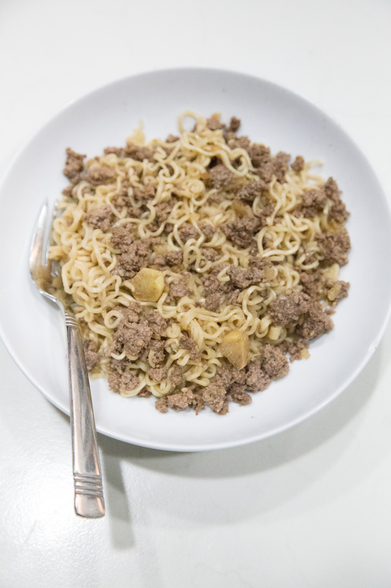

Beef Ramen

This recipe is one of my go to's for how simple and satiating it is. There are no exact measurements because of how difficult it is to mess up. Use common sense!
Ingredients
- Ground Beef
- Maruchan Beef Ramen Noodles
- Parsley
- Water
Directions
- Cook up to 1 pound of ground beef on a skillet.
- Crush up dried ramen into small chunks and place into a bowl.
- Add a generous amount of water.
- Add a generous amount of parsley. This will spice up the recipe and give it more class.
- Microwave on high for three and a half minutes.
- Remove from microwave and drain some of the water depending on preference of the consumer.
- Add the cooked ground beef and the packets of beef flavor.
- Stir until there is an even consistency.
back to homepage